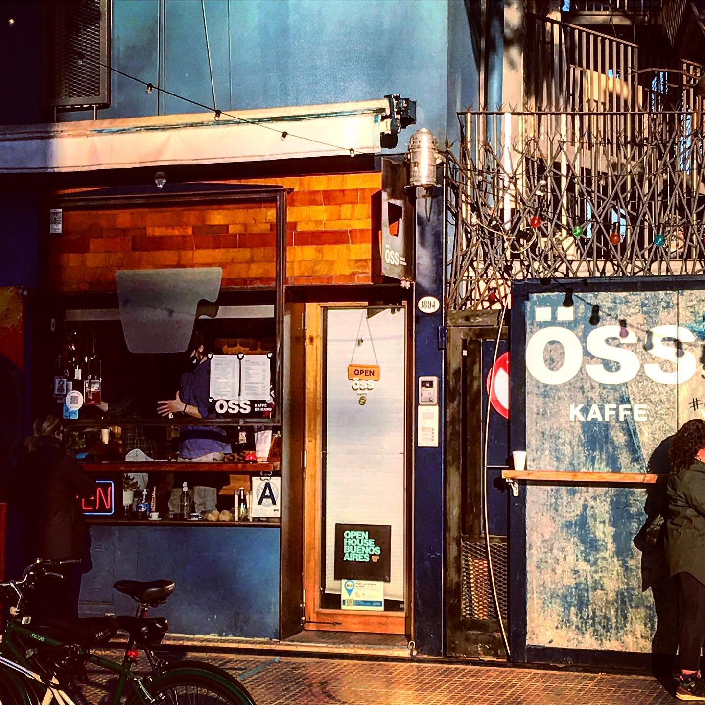
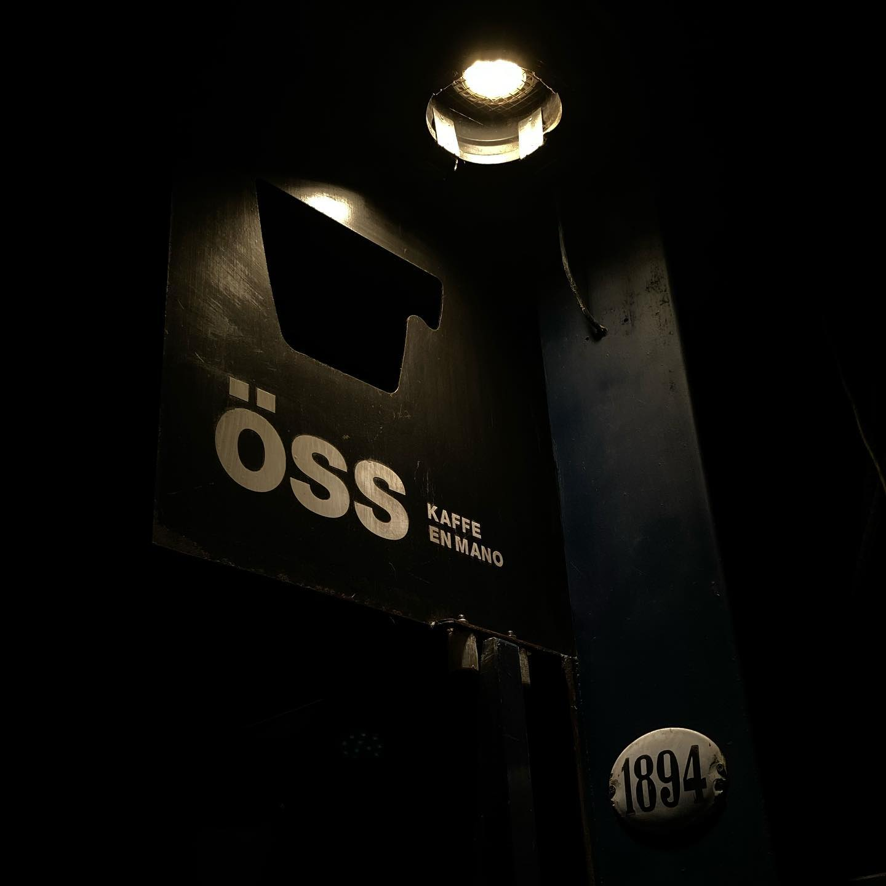
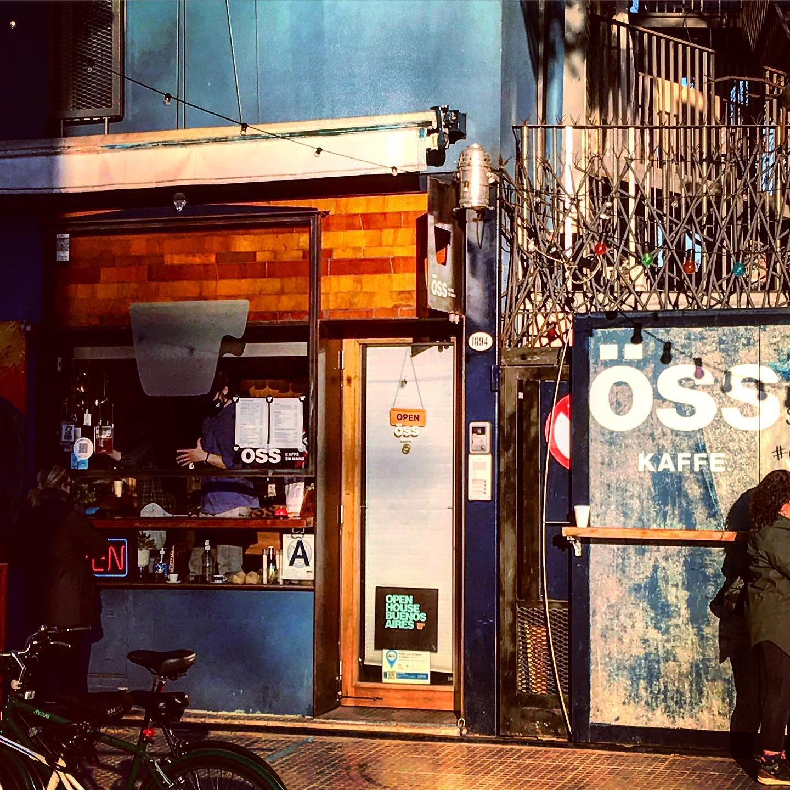
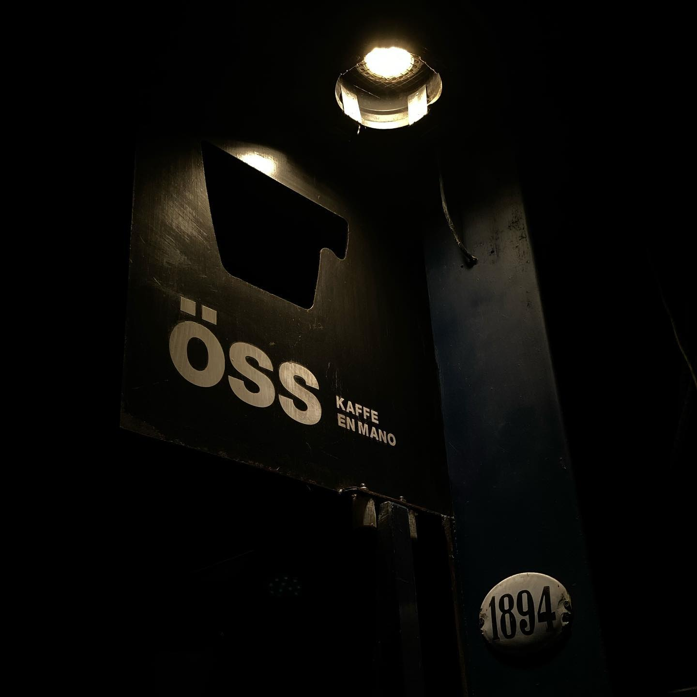

Más que un café, Öss Kaffe se ha convertido en un punto de encuentro cultural, donde el arte, la música y la comunidad se integran naturalmente.
Su ambiente tranquilo, su estética cuidada y la calidad excepcional de sus bebidas lo posicionan como una de las experiencias cafeteras más destacadas de Buenos Aires.

Öss Kaffe es una cafetería de especialidad ubicada en el corazón del Barrio Chino de Buenos Aires. Fue creada por el arquitecto Fernando Iglesias Molli.

Quien se inspiró en la cultura nórdica del café para diseñar un espacio cálido, minimalista y acogedor, nacida en un antiguo garaje.
La cafetería combina un cuidado diseño arquitectónico con granos seleccionados y métodos artesanales de preparación.
 


